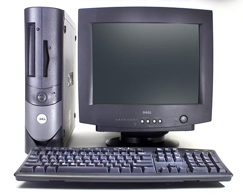
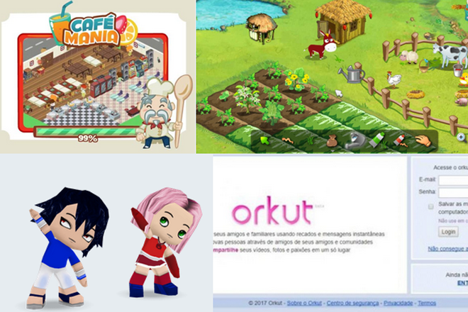
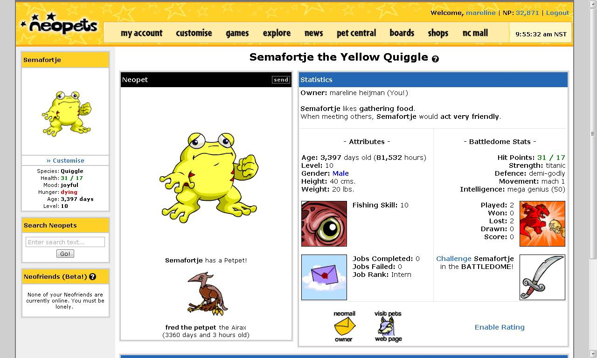
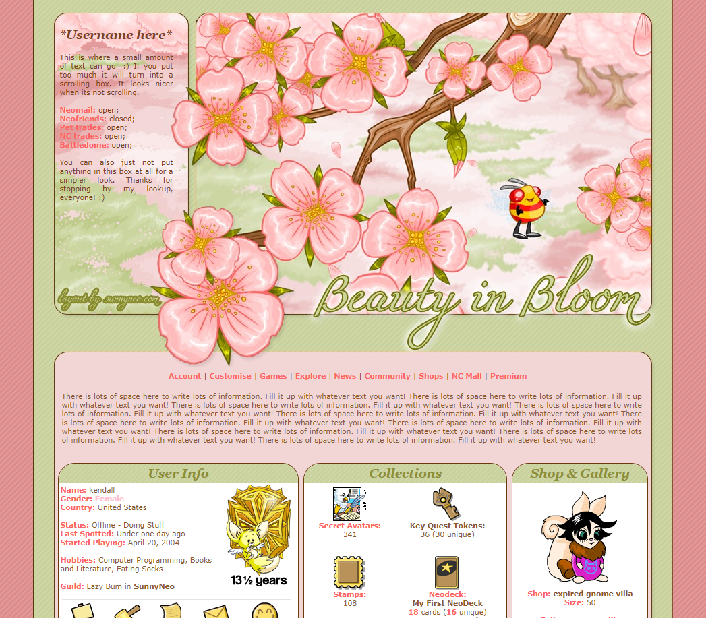
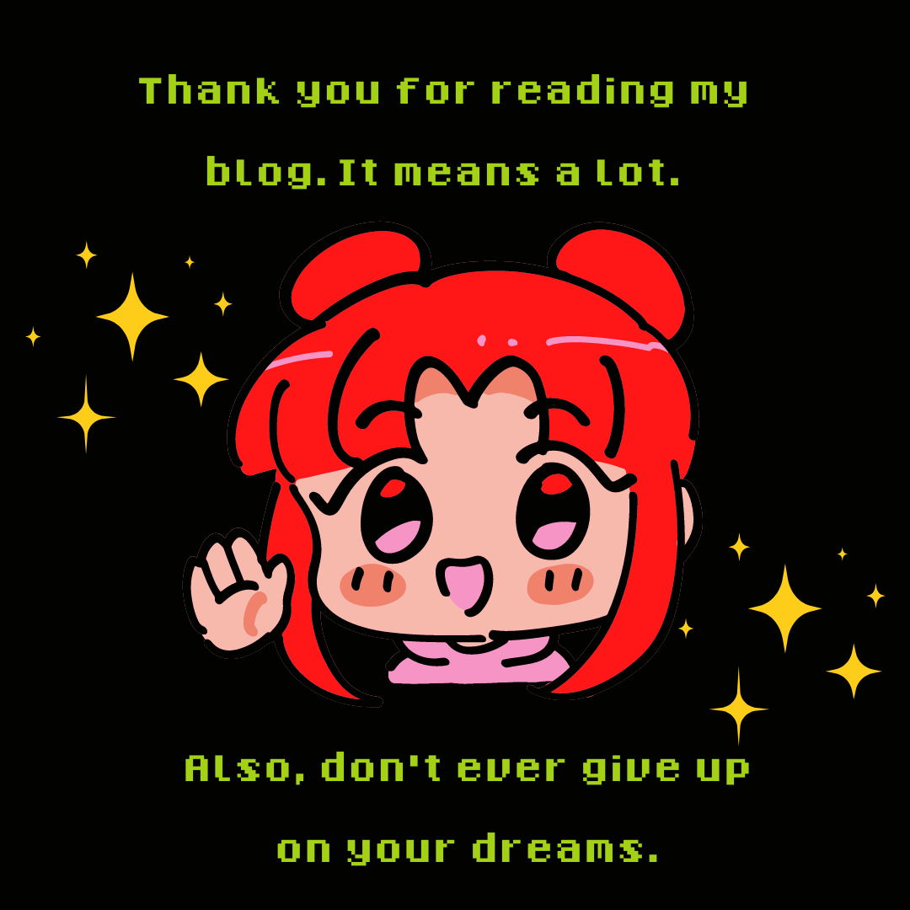

A blog where i explain how I learned about technology and became a programming student.
When I was a kid, my parents didn't have money to buy me a computer. But, for my luck,
my uncle had one. So when I came home from class, I would get my bike and
go to my grandma's house.
I learned everything I knew about computers all by myself.

I remember I spent a lot of time at Orkut, a dead social media.
I used to write on forums about Harry Potter, bands I like or games.
This Social Media even had minigames! I used to love them.

But the thing that introduced me to Web Dev was a site called Neopets.
At this website, you had a homepage to show your virtual pet, points, mini stores, etc.
And you could transform this:

To this:

Obviously I couldn't do much.
Because, after all, I was only 7 years old.
But I learned how to copy codes and change colors, put images, etc.
After years making blogs, one day during a conversation with my boyfriend I stopped, saying:
I wish I could make some money with those websites.
And he told me: Well, you can, it's actually a profession. And it's called Web Developer.

Since this day I started looking for courses at the internet, and learned a lot about HTML and CSS.
My biggest dream was to enter a college, study programming and learn more about technology.
This year, I finally started studying in an awesome university and met a lot
of cool people who also love programming. I still don't work with IT but everyday I love this area
more and more. Now it's more than just a hobbie, it's my life and future.
I'm really happy and I've been looking for more knowledge. I used to want to be a Doctor, and studied a lot.
But never got into school. It was so frustrating I thought I should quit life.
But I always believed something good would come for me. I think I'm really close now.
A lot of times I used to think about giving up. There was tears, anger, frustration. But now, I'm really proud of how far I've come.
May the odds be ever in my favor.
